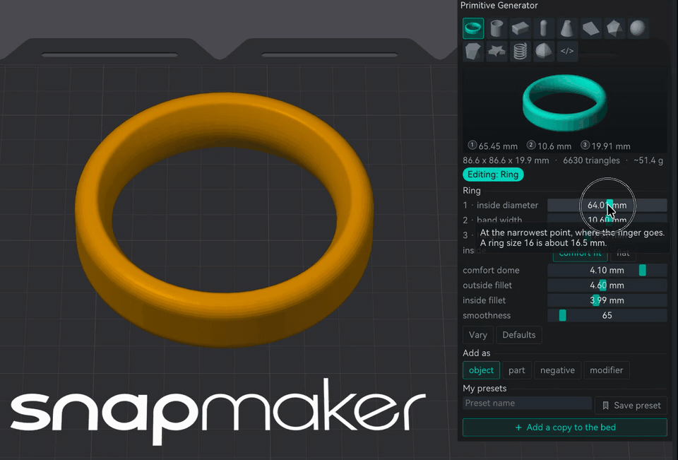
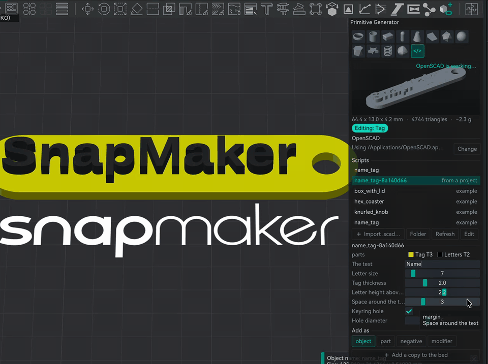

Build & fix
Primitive Generator: shapes by their sizes, and OpenSCAD
A ring 18 mm inside, a box with rounded corners 40 by 30, a spring with six turns. Pick the shape, type or drag the numbers that matter, and it lands on the bed. Change it later and it changes on the bed. And when the twelve shapes are not enough, your own OpenSCAD scripts come in with their numbers as sliders.
- no gate
- 2.5.0
Toolbar › last icon (a cube, a ring and a plus) · the </> tile for scripts

What you had to do without it
Orca's own shapes are a cube, a cylinder, a sphere and a cone at a fixed size, and you scale them by eye. For anything with a real measurement, a ring for a finger, a box for a part, you opened a CAD program, exported an STL, imported it, and did it again for every change.
Twelve shapes with real sizes
- Ring, tube, rounded box, capsule, cone and pyramid, wedge, the five platonic solids, geodesic ball, antiprism, star with twist, spring and superformula. All closed meshes, sitting on the bed.
- The ring is a real ring. Comfort fit (the inside is domed like a wedding band) or flat, its own outside and inside fillet, and the inside diameter measured where the finger goes.
- A live preview in the panel. Drag it to turn it. Size, triangles and grams update as you move a slider.
- Add as object, part, negative part or modifier. New objects land on a free spot of the bed.
- Change it later. Select a shape made here and the sliders edit it on the bed, one undo step per drag. The numbers are saved in the 3mf.
- Vary tries random numbers around yours. My presets keeps the ones you like.
Your OpenSCAD scripts, with sliders

- The Customizer numbers become sliders: ranges and steps, check boxes, drop downs, text and
/* [Groups] */, read the same way OpenSCAD's Customizer reads them. - Four examples to start: a box with lid, a knurled knob, a honeycomb coaster and a two colour name tag.
- Import .scad, Folder and Edit. Edit opens the script in OpenSCAD, and when you save it there the shape here updates by itself.
- Multi colour pieces. A script with a
partchoice (part = "all"; // [all, tag, letters]) is drawn piece by piece. Each piece becomes a part of the object, on the loaded filament closest to the colour the script gives it. Change it later in the object list, mixed filaments included. - The 3mf carries its own script. Open a project made with a script you don't have and the shape can still be changed. A script that comes inside someone else's project waits for Trust and run before it runs.
OpenSCAD itself is free, from openscad.org. The panel finds it in the usual places or lets you point to it. It runs in the background, with the Manifold engine when your OpenSCAD has it, so the panel does not freeze while a script builds.
The catch
- OpenSCAD has to be installed for now. A later build ships it inside the app.
- Scripts that use libraries (BOSL2 and similar) need them installed in OpenSCAD, and the libraries do not travel inside the 3mf.
- Without a
partchoice a script comes out as one piece, even if it usescolor(). - Changing a shape repaints nothing: painting on a generated shape is lost when you change its numbers.
- The panel has the Neotko look, its own colours and layout, not Orca's classic gizmo style.
Covers the Primitive Generator and its OpenSCAD scripts, release 2.5.0
(NEOTKOCM_RELEASE_2_50.md).